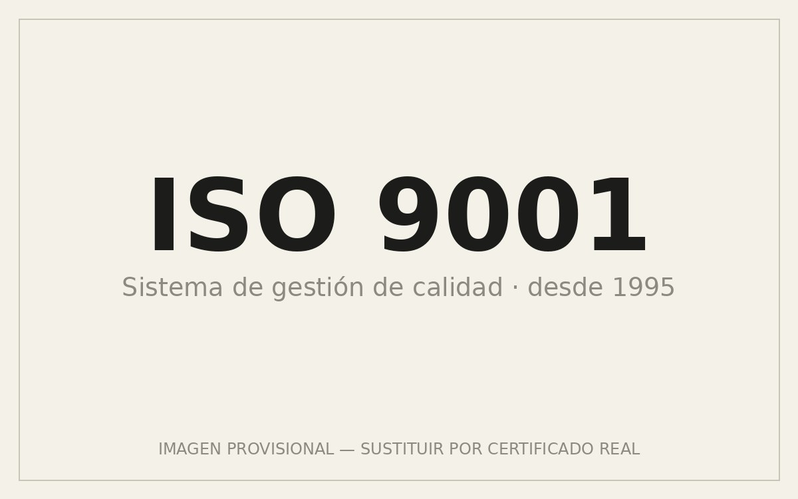
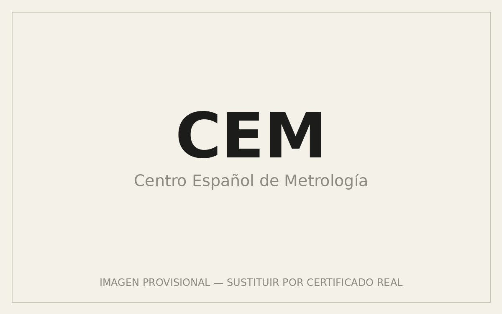
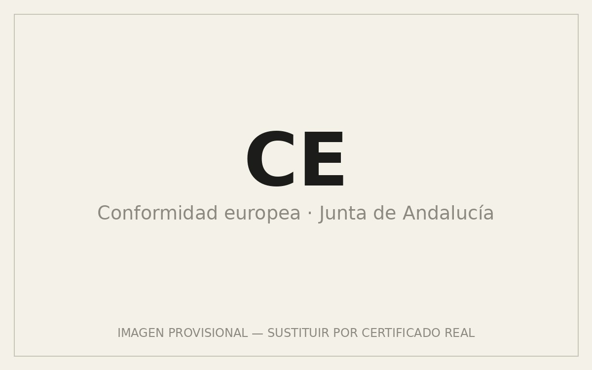
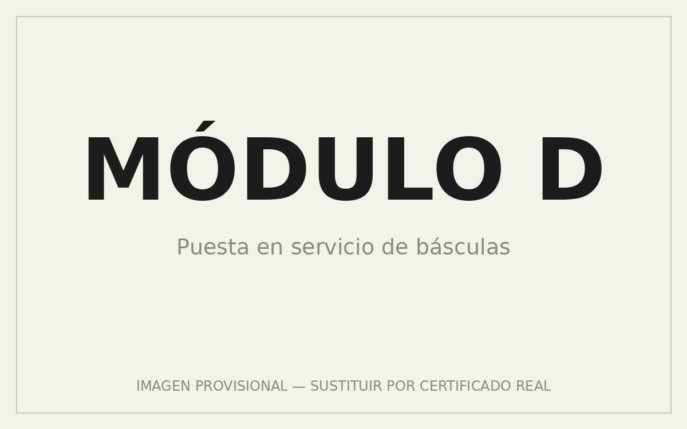
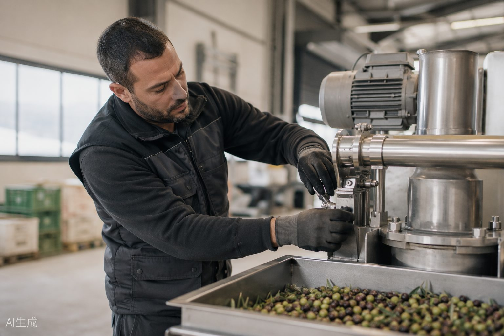

ISO 9001
↗Sistema de gestión de calidad certificado desde 1995, con el asesoramiento de Lloyd's Register Quality Assurance, acreditada por ENAC.
Cumplimos los más altos estándares del sector desde 1995: sistema de gestión ISO 9001, normativa CE, metrología legal y control exhaustivo en cada equipo que sale de nuestras instalaciones.
Pedir documentaciónCada certificación es el resultado de auditorías externas y de un departamento de I+D que trabaja con las tecnologías más vanguardistas.

ISO 9001
↗Sistema de gestión de calidad certificado desde 1995, con el asesoramiento de Lloyd's Register Quality Assurance, acreditada por ENAC.

CEM
↗Certificados de metrología legal de nuestras básculas e indicadores de peso, expedidos por el Centro Español de Metrología.

CE
↗Fabricación conforme a la normativa europea, con control metrológico otorgado por la Junta de Andalucía.

Módulo D
↗Certificado de Módulo D para la puesta en servicio de nuestras básculas, garantizando su conformidad en explotación.
Trayectoria
SAFI nace a finales de 1992 con una idea clara: elevar la calidad del aceite de oliva mejorando cada fase de la recepción del fruto. Hoy somos referente internacional en el sector oleícola.
Ver nuestros sistemas →1992
Nace SAFI
Se constituye Sistemas de Fabricación SAFI, S.L. para aportar una nueva filosofía a la maquinaria del sector oleícola.
1995
I+D e ISO 9001
Creamos el departamento de I+D y obtenemos la certificación UNE-ISO 9001, aplicando la normativa CE.
1998
Salto internacional
Nos incorporamos al programa P.I.P.E. de internacionalización de la Cámara de Comercio de Granada.
2000
Premio a la Exportación
La Cámara de Comercio de Granada reconoce nuestra proyección exterior, hoy presente en más de 15 países.
Hoy
Liderazgo tecnológico
Básculas e indicadores de peso de fabricación propia y un servicio post-venta considerado referente del sector.
La sostenibilidad está en la base de nuestro trabajo, desde el diseño de cada máquina hasta el servicio de una agricultura más eficiente.
Máquinas que optimizan el consumo de agua y energía en cada fase de la limpieza y el lavado del fruto, desde el primer boceto.

Producción con procesos responsables que reducen el impacto ambiental de principio a fin de la cadena, sin sacrificar rendimiento.

Mantenimiento y recambios que alargan la vida de cada equipo: la máquina más sostenible es la que dura más campañas trabajando.
